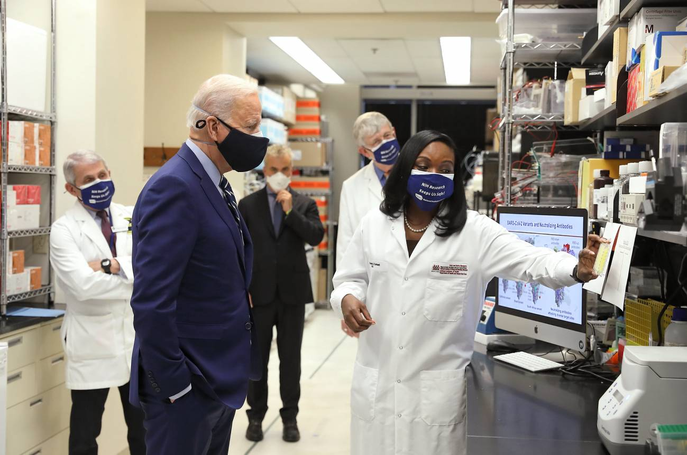
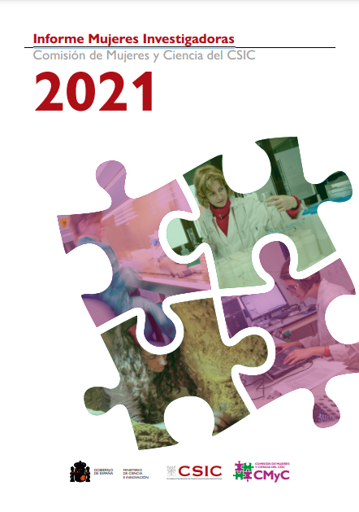
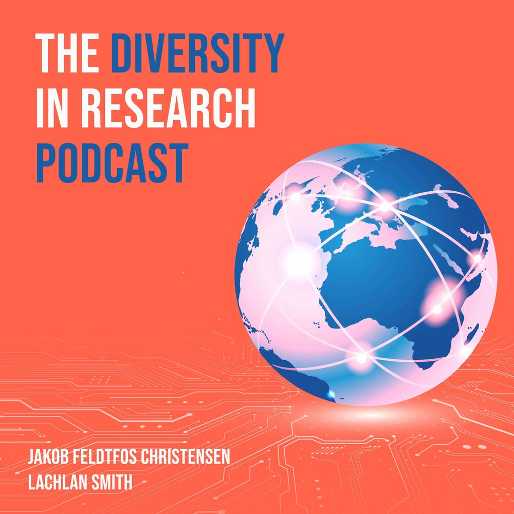
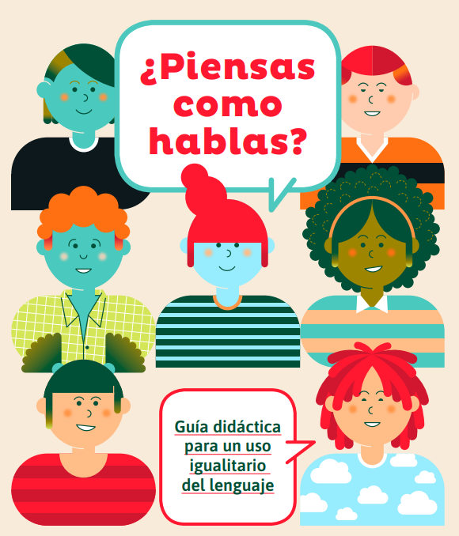
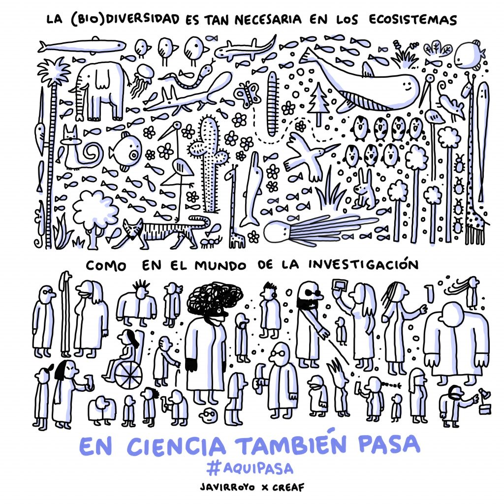

On September 13, 2018, the ICCUB Council approved the creation of the Diversity, equity and inclusion commission, with the aim of promoting specific actions to provide a welcoming environment to our members and visitors, regardless of gender, gender identity, sexual orientation, ethnicity, beliefs or disability.
The commission will work in cooperation with the Equality Commission of the University of Barcelona (Physics).
- Terms of reference
-
In order to ensure that diversity, equity and inclusion are properly taken into account at all levels, and in all the events organized and all the decisions made by the ICCUB, the committee will undertake the following actions:
- Elaborate a code of conduct which will provide ethical guidelines for all the ICCUB members.
- Develop a procedure to manage any possible complaint related to discrimination. This action includes:
- The designation of two ombudspeople (Francesca Figueras and Àngels Ramos) among the members of the committee, working in close collaboration with the Equality Commission of the University of Barcelona, and to whom ICCUB personnel or visitors should contact in case of harassment.
- Training led by experts and addressed to the members of the commission, focused on how to properly proceed in case of harassment and how to deal with different types of complaints.
- Organize periodic lunch/coffee meetings, open to all members and visitors of the Institute, to share the perception among our members on how our policies, practices, and procedures foster diversity and inclusion.
- Organize training on how to properly:
- avoid writing a biased recommendation letter or job advertisement,
- avoid unconscious bias as a referee in selection panels, and in general, as member of any decision panel.
- Alleviate age limit restrictions in internal recruitment, in instances where e.g. career maternity/paternity breaks have been taken.
- Schedule internal events and meetings in a way that they are compatible with family life.
- When participating in panels, ensure minimum quotas for the gender balance, according to the specific field gender ratio.
- Regarding the ICCUB job offers, make an effort to increase the percentage of applicants from under-represented groups in the final process selection. For example, by advertising the offers in platforms specifically addressed to minorities, as the European platform for women scientists https://epws.org/tag/jobs/.
In addition, we shall work in producing a gender/group proportion in the final short list not too different from the proportion observed in the closing of the application. If this is not the case, we should keep track of the possible reason(s) for the unbalance.
- Monitor any unbalance in the gender/group proportion of short lists before they are sent for evaluation, as well as in gender promotions, reporting and disseminating in a transparent way the results of these studies.
- Try to identify and engage female colloquia/seminar speakers to offset the field statistics. Suggest them to meet students before or after the talk to discuss gender issues.
- Engage young ICCUB researchers in gender actions, and organize group sessions to mentor them about potential gender issues they will likely encounter.
THE DEIC- ICCUB COMPOSITION
The commission is chaired by the ICCUB deputy director, gender balanced and respects diversity. It is formed by researchers of different seniorities and nationalites.


Equality Plan:
The following equality plan stems from the need and commitment to design and implement specific objectives and measures to achieve genuine gender equality at the Institute of Cosmos Sciences of the University of Barcelona (ICCUB). This interdisciplinary institute is dedicated to fundamental research in cosmology, astrophysics, particle physics, theoretical physics, nuclear physics, and quantum physics. Additionally, the institute has a robust technological program, actively participating in international collaborations in observational astronomy and experimental particle physics.
Suggested activities

Protocol of the UB for the prevention, detection and action against sexual harassment
The Protocol of the University of Barcelona for the prevention, detection and action against situations of sexual harassment due to reasons of sex, gender or sexual orientation, and other sexist behaviors, is an essential tool to tackle gender-based violence, and subscribes to the policy of zero tolerance for harassment and sexist behaviour at the UB.
The guide explains which behaviours are considered sexist or constitute harassment on grounds related to sex, gender and sexual orientation, it relates how the protocol is activated in order to handle these situations and also which assistance is offered by the University.
If you have found yourself in a sexist situation described in the guide, do not hesitate to write to us using the following mailbox. We will get in contact with you to assist you in a personalized way. You can also write to protocol.igualtat@ub.edu or call +34 690 052 987.
Other telephone numbers of interest:
900 900 120: Support to the survivors of gender-based violence
112: emergencies
THE DEIC- PREVIOUS MEMBERS
- Roberto Emparan, ICREA research professor at the University of Barcelona
- Mar Carretero, European Southern Observatory Felow based in Chile
- Toni Bertólez, Postdoctoral researcher at the University of Wisconsin-Madison, US
- Katie Short , Senior AI/ML Engineer @ King, Barcelona
- Nikolaos Triantafyllou, Design Engineer at ASML, Eindhoven, Netherlands
- Anna Ferrer-Mateu, Ramón y Cajal Fellow, Instituto de Astrofísica de Canarias, La Laguna, Tenerife
- Julia Peral, Gender Officer, Catalonia Quantum Academy
DEIC INFORMATIVE DAY 2021
SUGGESTED NEWS ITEMS

“No podemos seguir mirando hacia otro lado”: la agencia de salud de EE UU, contra el racismo en la ciencia. Link.
El #MeToo empieza a calar en el mundo científico (pero lentamente). Link.

Informe Mujeres Investigadoras of CSIC. Link.
MATERIALS AND RESOURCES
The Spanish State Research Agency (AEI) offers a number of e-learning training modules on gender equality in R+D+i, designed by the Women and Science Unit and the Equality Unit of the Ministry of Science and Innovation in the frame of the European Project SUPERA as part of the AEI Equality Plan 2021-2023. Link here.
Diversity in research: III Event on Gender Equality of the SOMM alliance
The ICCUB took part in the III Event on Gender Equality of the SOMM alliance. It was an interactive and exciting event. We invite it to explore it and reflect on diversity with us!
"Women in AstroPhysics" Science Seminar by Jocelyn Bell
Jocelyn Bell will be our next guest. She will talk about "Women in Astrophysics"
Other Materials

Resources: here


UNCONSCIOUS GENDER BIAS IN R&D&I: The existence of unconscious gender biases that could harm them in access, promotion and evaluation, as well as promoting egalitarian, diverse and inclusive environments where science and research take place, so that they can reach their full potential in true equality conditions.
THE GENDER DIMENSION IN R&D&I PROJECTS: The integration of sex/gender analysis in all phases of the research cycle is essential, which means taking into account both the biological characteristics of women and men (sex) and their social and cultural characteristics, as well as the different impact that results it can have on one and the other, with the ultimate goal of benefiting women and men equally, a reflection of excellent science and social commitment.

In the International Day of Women and Girls in Science we join the initiative by CREAF to give visibility to the inequalities in the scientific workplace
RELATED LINKS